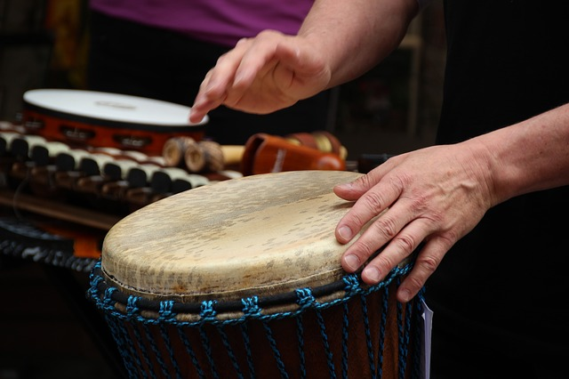

Students styudying the GCSE music course will also study the music of the sub-saharan part of Africa. African music is different to western music for the following reasons:
it is not written down, it is part of everyday life for everyone in the town/city, it is part of political events and traditional instruemnts are used instead of standard instruments.
An example of a traditional African Instrument is A Djembe drum, here is an image of one:

String Instruments also play a big part in African music, A common string in this type of music is the Kora, it is a type of harp that uses long strings to produce it's sound. The Kora is also used to play melodies at high speeds to accompany other musicians whilst they are also playing.
African music also makes use of many wind instruments that are also found in western countries such as: flutes, horns, trumpets and reed pipes.
Less common istruments that are also used are rattles, shakers, gongs and rasps.
Like in many English speaking countries, singing in Africa is also used to celebrate a variety of occasions such as birthdays, christmas(or other religous celebrations), marriages, funerals. The differences in African music are that they are also used for politcal and tribal occasions, music isn't usually used
for political occasions in English speaking countries. South African national anthem: